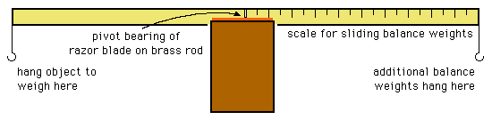
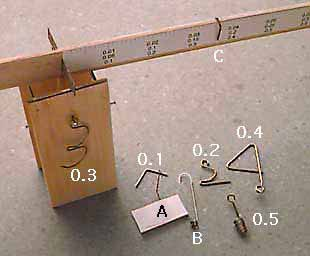

Fly Right, Fly LightA Beam Balance to Build  I made this balance based upon a description in Lew Gitlow's book, "Indoor Flying Models". While a little tricky to use, as it is undamped, it is extremely accurate for very light stuff. It was made 40 cm long so that each hook is 20 cm from the pivot. With a 0.1 gram sliding weight, this means every 2 mm represents 0.001 gram, allowing a max capacity of 0.1 grams. Intriguing, but not very useful for most of our needs. Placing additional weights on the right hook allow us to increase the capacity to the maximum strength of the beam. As you can see in the photo at left, I have a variety of fixed balance weights that can be used to increase the capacity and utility. The 0.2, 0.3, 0.4 gram weights were bent to shapes that facilitate remembering their function. "A" and "B" are a weighing pan and a matching tare weight. These are used to weigh objects that don't hang well from a hook. "C" is the 0.1 gram sliding weight on the beam arm. I also have sliding weights of 0.5 and 1.0 grams, thus the three reference scales on the arm. Were I to make another version, it would have a fourth reference scale for a 0.2 gram weight. The base would be taller as I am often setting it on stuff to gain clearance as I hang larger parts. Other bearings can also be used to facilitate use, like a music wire axle in brass tubes, though possibly at the expense of sensitivity.
Copyright 1998 - 2011, Thayer Syme. All rights reserved |